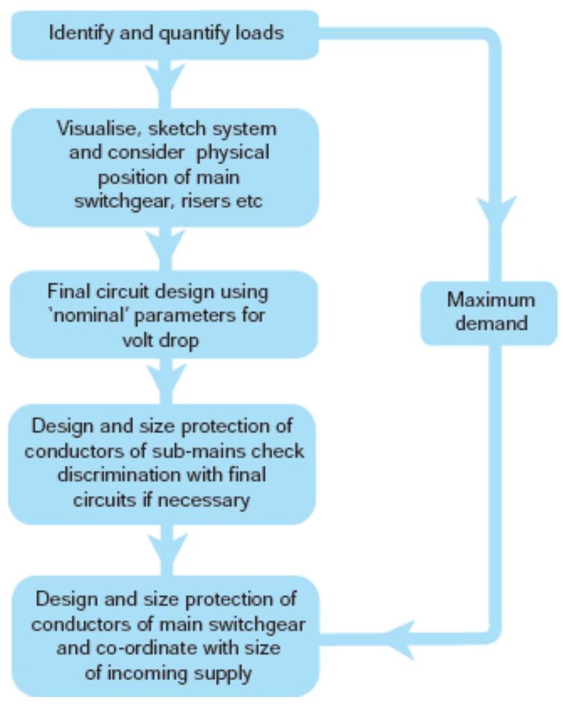

Circuit Design, Distribution & Protection
Condition for Domestic & Industrial Installation (EE Regulations- BS 7671)
- Height of switch board must be 1.3 m to 1.75 m from floor level
- Height of distribution board must be 1.5 m to 1.75 m from floor level
- The bottom of ceiling fan should have minimum clearance of 2.75 m
- All lamp should be filled with a minimum clearance of 2.75 m above floor level
- Load should be equally shared
- In any building light wiring and power wiring should be kept separate
- Power per circuit may take it as 800 w or 1000 w
- Weatherproof wire for service connection with sufficient current carrying capacity.
- All conductor/wire should be sage in all term of voltage rating with proper insulation.
- Ever line or phase should be protected by suitable ratings fuse.
- Each load point an appliances should be a independent control switch.
- In any light/fan and the number of load points connected in one sub circuit should be less than 10(ten).
- In the bath rooms, the 3 pin socket should be at a height of not less than 1.5 m .
Block Diagram for Electrical installations
- It is a functional drawing which shows and describes the main operating principles of the equipments or devices.
- It consists of :--principle functions (represented by blocks) - line connections (shows relationship between them).
- The diagram is usually drawn before implementing a circuit diagram.
- Not give any detailed information.
- Leaves the information about smaller components.
Line Diagram
- Is a simplified notation of an electrical system.
- - Called as one-line diagram or single line diagram.
- - Similar to the block diagram
- - It consists of symbols to represent the components.
- - Lines to represent the wires or conductors which connects the components together.
- - The line diagram is derived from the block diagram.
Circuit Diagram
- - Electrical circuit is graphically represented in a simplified manner.
- - It gives the position information of various elements (in cm or m or mm)
- - Doesn't give any layout of the parts and their detail wiring information of the components.
- - One can do wiring by following the information given in this diagram
- - These diagram illustrate the working of an electric circuit.
Wiring Diagram
- - Wiring diagram is a representation of the circuit, shows the wiring between parts or elements.
- - Gives detailed information about wiring.
- - It includes:- -relative position -arrangement of devices -terminals on the devices
- - It shows power supplies and earth connections.
Electricity distribution to Buildings
- In the Kenya electricity is produced at power generating stations at 11 kV , in three-phase supply at 50 cycles per second or hertz (Hz). Thereafter it is transformed by step-up transformers to 132, 220 or 400 kV for transmission before connecting to the national grid. This very high voltage is used to minimize the current carried by the cables over long distances, hence reducing transmission losses.
- - Power to large towns and cities is by overhead lines at 66 kV or 33 kV where it is transformed to 11 kV underground/overhead supply at sub-stations.
- From these sub-stations the supply is again transformed to the lower potential of 415 volts, three-phase supply and 240 volts, single-phase supply for general distribution.
- - The supply to houses and other small buildings is by an underground/overhead ring circuit from local sub-stations. Supplies to factories and other large buildings or complexes are taken from the 33 or 11 kV mains supply. Larger buildings and developments will require their own transformer, which normally features a deltastar connection to provide a four-wire, three-phase supply to the building (see figure below).
Note:
- A balanced load, such as a three-phase electrical motor driving an air-conditioning fan, water pump or lift motor, does not produce a current in the neutral wire. This is because an alternating current flows alternately in the forward and backward directions along the line wire. The overall effect of three driving coils in the motor is a balance in the quantity and direction of the current taken from the line conductors. There is no net return current in the neutral wire from such a balanced load. Single-phase electrical loads, which are not in balance, produce a net current in the neutral conductor.
- The casings of all electrical appliances must be connected to earth by a protective conductor, the earth wire, connected to the earthed incoming service cable of the electricity supply authorities or an earth electrode in the ground outside the building. Gas and water service pipes are bonded to the earth by a protective conductor.
- Equal amounts of power are fed into each phase, and so it is important that power consumption within a building is equally shared by each line. The neutral wire is a live conductor in that it is the return path to the alternator for the current which has been distributed.
- For easy identification, each live phase cable has colour coded plastic insulation of red, yellow or blue. The neutral is colour coded black.
- A sub-station is required for the conversion, transformation and control of electrical power. It is used where large buildings or complexes of buildings require greater power than the standard low or medium potential of 240 and 415 volts. A sub-station must be constructed on the customer's premises. It is supplied by high voltage cables from the electricity authority's nearest switching station. The requirements for a sub-station depend upon the number and size of transformers and switchgear.
- The termination and metering of services cables to buildings is determined by the electricity authority's supply arrangements. Most domestic supplies are underground with the service cable terminating at the meter cupboard, as shown. Depth of cover to underground cables should be at least 750 mm below roads and 450 mm below open ground. In remote areas the supply may be overhead.
Circuit Design Procedure Overview
The procedure of carrying out an electrical system design of an installation can be quite involved and often a number of drafts and subsequent adjustments are necessary. The following flow diagram shows the logical order of steps in the design process:
